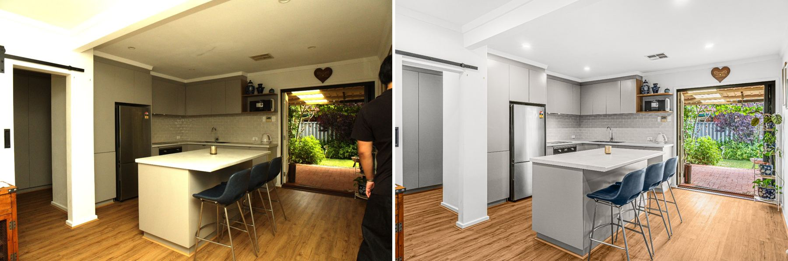
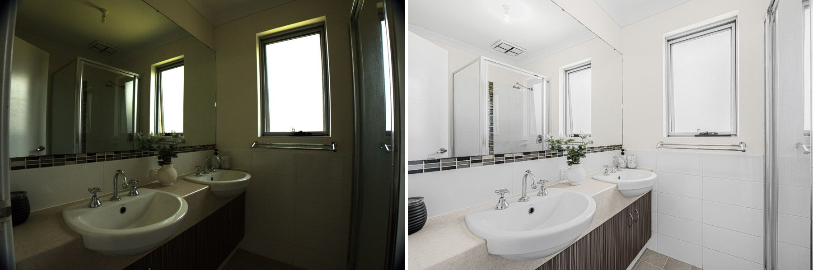
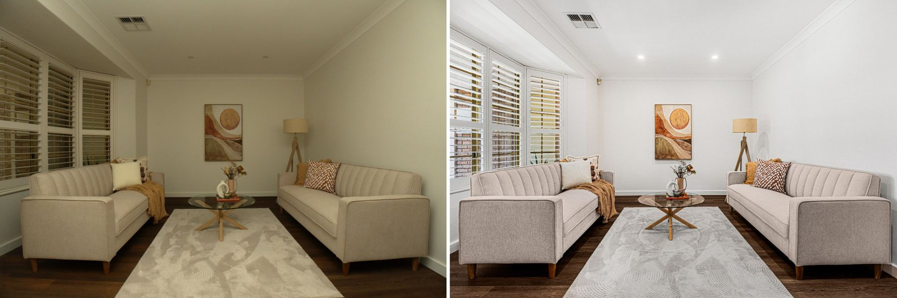
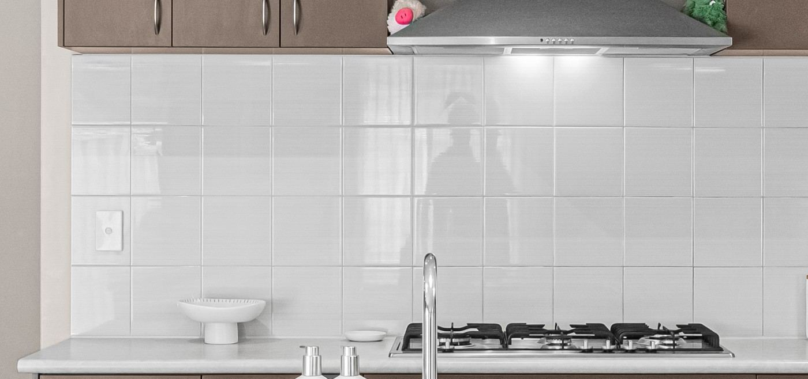
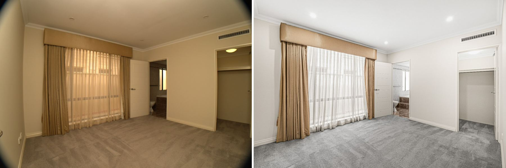
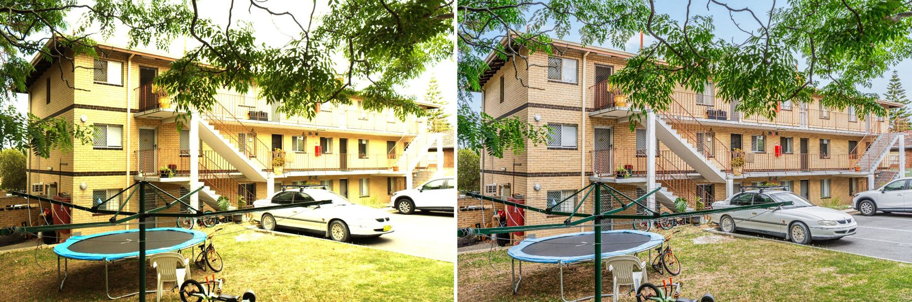

6 job(s) · 6 item(s) · Baker Production QC
Flash about 3 stops too dark
Flash frames were 2.6–3.3 stops under (target about 1 stop) and the living room and kitchen had no flash frame at all. Frame 08002 misfired. The photographer was standing in the kitchen flash frame (editor removed him). No front exterior in the set — check whether the front was shot.

Flash about 3.5 stops too dark
Flash frames were 2.3–3.8 stops under (target about 1 stop), and 7 of 13 rooms had no flash frame (dining, bedroom, main bathroom included). Backyard was shot in hard sun with heavy palm shade.

Flash about 3 stops too dark
Every flash frame was 2.4–3.1 stops under (target about 1 stop); the kitchen had no flash frame. Photographer and a hand were in two frames (editor removed). Bins were left in the side path. Camera clock is set to 21 Oct — please fix the date.

Flash too dark; watch reflections
Flash 2–3.2 stops under in bathroom, kitchen and dining, and only about 6 of 16 rooms had a flash frame. Photographer is reflected in the glossy kitchen splashback (08312) and stood in the dining flash frame.

Only 5 of 30 rooms had a flash frame
Most rooms were ambient brackets only, and 4 of the 5 flash frames were 1.7–3.1 stops under (target about 1 stop). Photographer showed in the ensuite mirror (editor removed it).

Rear yard shot in heavy tree shade
DSC08912 is dark under the tree, with clothes line, trampoline and bikes in frame. Try a brighter angle or time, and tidy the yard first.
